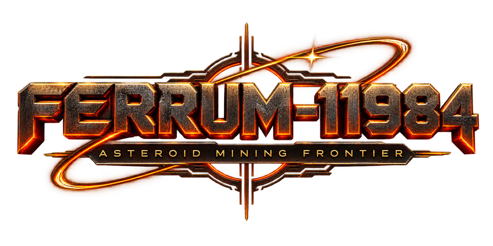

FERRUM-11984 wirft dich mit einem einzigen Scout in ein karges Sternensystem: abbauen, raffinieren, craften, deine erste Basis hochziehen, eine Werft eröffnen und schließlich ganze Raumstationen und Kolonien aufbauen — während irgendwo da draußen auch andere Schiffe unterwegs sind. Komplett im Browser, keine Installation.
Jedes System steckt voller Rohstoffe — was du daraus machst, entscheidet sich in Raffinerie, Werft und Bauplatz.
Asteroiden und Planeten mit dem Mining-Laser abbauen — Eisen, Titan, Nickel, Kupfer, Silizium, Eis und mehr.
Rohstoffe zu Platten, Kabeln, Elektronik, Maschinenbauteilen und Treibstoff veredeln — die Grundlage für alles Weitere.
Baublöcke im freien Raum platzieren: Stahl, Panzerung, Fenster, Türen und mehr, Block für Block.
Eigene Schiffsteile entwerfen und neue Schiffe auf Kiel legen — vom Scout zur eigenen Flotte.
Modulare Stationen mit Energie, Lager, Forschung und Landwirtschaft errichten und andocken.
Bevölkerung versorgen, wachsen lassen und Nahrungsproduktion hochfahren.
Technologiebaum über Mining, Energie, Antriebe, Schilde, Waffen, Sensoren und mehr freischalten.
Laser und Raketen gegen feindliche Schiffe, dazu Wracks, Ruinen und Anomalien mit alten Tech-Fragmenten erkunden.
Kein Tutorial-Zwang — aber ein klarer roter Faden von der ersten Schaufel Erz bis zur eigenen Station.
Mit dem Scout ins nächste Asteroidenfeld fliegen und die ersten Rohstoffe einsammeln.
In der Raffinerie Platten, Kabel und Elektronik herstellen — die Basis für Bau und Werft.
Eine erste Basis bauen, eine Werft eröffnen und die erste Station ins All setzen.
Forschung vorantreiben, Kolonien versorgen und dich gegen das, was da draußen lauert, zur Wehr setzen.
Dein Fortschritt wird automatisch lokal in diesem Browser gespeichert (Autosave alle 45 Sekunden). Für unterwegs gibt es zusätzlich eine Offline-Version zum Herunterladen — ein eigenständiger Spielstand ohne Internetverbindung.
Ein Scout, ein leeres Frachtlager und ein ganzes System, das darauf wartet, erschlossen zu werden.